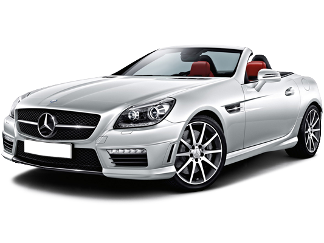

SLK-класс AMG
Mercedes-Benz SLK-класс — серия компактных родстеров класса люкс немецкой автомобильной марки Mercedes-Benz. Состоит из трёх поколений автомобилей: R170, дебютировавшего весной 1996 года, R171, представленного в 2004 году, и R172, выпускавшегося с 2011 года.Первая концептуальная модель серии под названием SLK II была представлена на Парижском автосалоне в 1994 году. Особенностью новинки стал жёсткий складной верх. Автомобиль поступил в продажу через два года в Европе, а в 1997 году попал на рынок США. Сборка была налажена в Бремене, Германия.
GLS 4 Matic
Mercedes-Benz GLS-класс — серия полноразмерных кроссоверов люкс-класса от немецкой компании Mercedes-Benz. В иерархии классов компании стоит выше M/GLE-класса и является флагманом в линейке кроссоверов марки. Включает два поколения автомобилей: X164, выпускавшегося с 2006 по 2012 год, и X166, продажи которого начались в 2012 году.Мировая премьера первой модели GL-класса состоялась в 2006 году на Североамериканском международном автосалоне. Изначально планировалось продавать автомобили только для американского рынка, но позже было принято решение расширить сектор продаж странами Европы.
E-класс седан
Mercedes-Benz Е-класс (ориг. E-Klasse, ранее нем. Einspritzung — «топливный впрыск») — серия легковых автомобилей бизнес-класса немецкой торговой марки Mercedes-Benz, официально представленная с 1993 года и в настоящее время состоящая из пяти поколений. До 1993 года компания Mercedes-Benz выпускала серию автомобилей бизнес-класса без унифицированной структуры именования. Суффикс «E» происходил от слова Einspritzung, что в переводе с немецкого означало систему впрыска топлива — новаторское технологическое решение, которым первыми оснастили предшественников современного E-класса в 1960-х годах (например, 230 E).